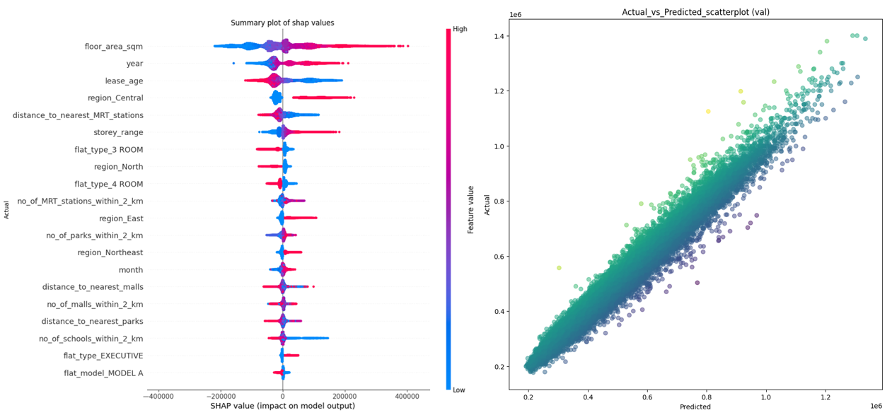

Estimating and interpreting HDB resale prices via feature engineering and SHAP values
Try it on Streamlit!
Introduction
The objective of this project is to develop an end-to-end machine learning pipeline to predict HDB resale prices based on existing features of each HDB flat transaction, as well as new derived features based on the geographical location of the flat. The end-to-end pipeline includes data preparation, feature engineering, model training and evaluation, and deployment.
For deployment, the model is deployed on a dashboard that users can input flat details to generate a predicted resale price. To understand how the predicted resale prices are generated by the model during inference, SHAP values are calculated and plotted on the dashboard to determine which features contribute the most to the prediction. Geographical plots of the flats' vicinity are also generated to provide a visualization of the flat's surrounding amenities.
Exploratory Data Analysis
Tools used
- Pandas
- Matplotlib
- Seaborn
- Statistical tests
- API requests
- Web scraping tools (BeautifulSoup)
The HDB resale price data was downloaded from Data.gov.sg, containing approximately 120,000 resale transactions from 2015 to 2020.
There are a total of 117,527 rows and 11 columns in the dataset. Each row represents a hdb resale transaction, and the target variable is the "resale_price" variable. The EDA selection consists of the following main tasks:
- Perform one-way ANOVA tests on raw categorical features with the target variable to check whether the unique categorical values have statistically significant differing mean resale prices (eg towns, flat model, flat type etc...)
- Perform Pearson R tests on raw continous features with the target variable to check whether is it statistically significant that the distributions between the continous feature and the target feature are uncorrelated.
- Identify features and the steps required clean and preprocess them in the data preparation pipeline (changing of data types, imputing null values, mapping to new categories, encoding etc...)
- Perform webscraping to obtain list of amenities (malls, parks, mrt stations and schools) in Singapore, and make API calls to obtain the coordinates of each amenity, which will used to generate new features for each flat. Analyze each derived feature's relationship with the target resale price variable.
Here are the highlights of the EDA performed on the dataset.
Overview of raw features EDA
| No | Feature | Type | Nulls present | Comments |
|---|---|---|---|---|
| 1 | Month | Object (string) | No | - In its raw form, need to convert it to datetime and extract out the year and month values |
| 2 | Town | Object (string) | No | - significant relationship with target (one-way ANOVA) - High cardinality (26 unique values) Will need to map to region to reduce cardinality |
| 3 | Flat Type | Object (string) | No | - very little samples with "MULTI-GENERATION" and "1 ROOM", can consider dropping samples - majority flat type is "4 ROOM" + significant relationship with target (one-way ANOVA) |
| 4 | Block | Object (string) | No | - too many unique values, likely not useful in predicting target variable |
| 5 | Street Name | Object (string) | No | - too many unique values, likely not useful in predicting target variable |
| 6 | Flat Model | Object (string) | No | - majority flat type is "Model A" + significant relationship with target (one-way ANOVA) - High cardinality (20 unique values) Will need to consolidate common flat models together to reduce cardinality |
| 7 | Storey Range | Object (string) | No | - majority storey range is "7 to 9" + significant relationship with target (one-way ANOVA) - May need to ordinal encode into numerical variable |
| 8 | Floor Square Meter | Float | No | - strong positive correlation with target (pearson R) - mean floor area is 97.4sqm |
| 9 | Lease Commence Date | Integer | No | - Could use along with the year value it to calculate lease age, which has a negative correlation with target (pearson R) |
| 10 | Remaining Lease | Object (string) | No | - likely correlated with lease age and lease commence date - data quality is inconsistent (eg 86 years, 86, 86 years 07 months) |
Overview of generated features EDA
| No | Feature | Type | Nulls present | Comments |
|---|---|---|---|---|
| 1 | no_of_schools_within_2_km | Integer | No | - slight negative (-) correlation with the resale value of the flat - mean number of schools within 2km radius is about 15 |
| 2 | distance_to_nearest_school | Float | No | - slight positive (+) correlation with the resale value of the flat - mean distance to the nearest school is about 300m |
| 3 | no_of_mrt_stations_within_2_km | Integer | No | - slight postive (+) correlation with the resale value of the flat - mean number of mrt stations within 2km radius is about 3 |
| 4 | distance_to_nearest_mrt_station | Float | No | - slight negative (-) correlation with the resale value of the flat - mean distance to the nearest mrt station is about 855m |
| 5 | no_of_malls_within_2_km | Integer | No | - slight postive (+) correlation with the resale value of the flat - mean number of malls within 2km radius is about 5 |
| 6 | distance_to_nearest_mall | Float | No | - slight negative (-) correlation with the resale value of the flat - mean distance to the nearest mall is about 665m |
| 7 | no_of_parks_within_2_km | Integer | No | - slight postive (+) correlation with the resale value of the flat - mean number of parks within 2km radius is almost 2 |
| 8 | distance_to_nearest_park | Float | No | - slight negative (-) correlation with the resale value of the flat - mean distance to the nearest park is about 1.2km |
Data Preparation Pipeline
Tools used
- Pandas
- Geopy
- Docker
- Postgres SQL
The raw data is first read from the filepath and passed through the Data Cleaning module. The cleaned data is then passed through the Feature Engineering module, which generates derived features based on existing raw features as well as the coordinates of the various amenities. The derived features are then saved to a datatable in a Postgres database for storage.

Training Pipeline
Tools used
- Scikit-learn
- MlFlow
- Hydra
- Hyperparameter tuning (Optuna)
- Docker
The derived features and target variable are first extracted from Postgres. The derived features then undergo a series of preprocessing steps that include ordinal encoding, one-hot encoding, train-validation-test splitting and standard scaling if necessary.
The model is initialized with its specified hyperparameters and then trained on the training data. The trained model is then evaluated on the various datasets using an Evaluator class, generating visualizations and performance metrics.
The model and its respective set of parameters, visualizations and metrics are then logged to MLFLow for tracking. Lastly, the metric to optimize the model on is returned at the end of the train pipeline.
Model Evaluation
The following model architectures using ensemble learning (combining multiple weak learners into one predictive model) are trained:
- Random Forest
- Explainable Boosting Regressor
- XGBoost
For each model architecture, a baseline model is trained using all derived features and the default hyperparameters. The model's hyperparameters are then fine-tuned using Optuna to search for the optimal set of hyperparameters that minimizes the specified performance metric (validation room mean squared error).
The model and its respective set of parameters, visualizations and metrics are then logged to MLFLow for tracking. Lastly, the metric to optimize the model on is returned at the end of the train pipeline.
| Model | Baseline Train RMSE | Baseline Validation RMSE | Fine-tuned Train RMSE | Fine-tuned Validation RMSE | Baseline Train R Squared | Baseline Validation R Squared | Fine-tuned Train R Squared | Fine-tuned Validation R Squared | Fine-tuned Parameters |
|---|---|---|---|---|---|---|---|---|---|
| Random Forest | 69247.1 | 68800.6 | 13282.7 | 26525.8 | 0.771 | 0.77 | 0.992 | 0.966 | max_depth:20, min_samples_leaf:1, n_estimators:205 |
| Explainable Boosting Regressor | 55222.2 | 55435.6 | 45915.1 | 46890.1 | 0.855 | 0.85 | 0.899 | 0.893 | inner_bags:0, interactions:10, learning_rate:0.01, max_bins:256, max_interaction_bins:32, max_leaves:3, min_samples_leaf:2, outer_bags:8, |
| XGBoost | 25637.9 | 29166.1 | 16657.6 | 25119.7 | 0.969 | 0.959 | 0.987 | 0.969 | max_depth:8, learning_rate:0.1, n_estimators:480 |
For the baseline models, XGBoost has the lowest validation root mean squared error of 29116, and the highest validation R squared score of 0.959. There is not much overfitting on the training set, as observed by the minor differences between the train and validation scores.
After fine tuning the hyperparameters to minimize the validation root mean squared error using the Optuna's TPE sampler, the XGBoost model's validation root mean squared error and R squared score decreased and increased to 25119 and 0.969 respectively. The fine-tuned XGBoost model was using a learning rate of 0.1 (default: 0.3), maximmum depth of 8 (default: 6) and 480 estimators (default: 100).
The fine-tuned random forest model's validation root mean squared error and R squared score decreased and increased to 26525 and 0.966 respectively. It uses a max depth of 20, and 205 estimators (default: 100)
The selected models are also evaluated on the test set to ensure that the model is able estimate accurate predictions on new unseen data
| Model | Test RMSE | Test R Squared |
|---|---|---|
| Random Forest | 25936.6 | 0.968 |
| Random Forest | 24751.4 | 0.971 |
Feature Importances
SHAP values were calculated using the training set feature values, and were used to generate a summary plot to visualize which features have the greatest contribution to the final model prediction
Based on the summary plot for the XGBoost model, the top 5 features that have the highest SHAP values across all samples are "floor_area_sqm", "lease_age", "region_Central", "distance_to_nearest_MRT_stations" and "storey_range".
| Feature | Contribution |
|---|---|
| floor_area_sqm | The larger the floor area of a flat, the greater its contribution in increasing its predicted resale price, and vice versa |
| lease_age | The older the flat, the greater its contribution in decreasing its predicted resale price, and vice versa |
| region_Central | If a flat is located in the central region, it increases the predicted resale price, and vice versa |
| distance_to_nearest_MRT_stations | The closer the nearest MRT station is to a flat, the greater its contribution in increasing its predicted resale price, and vice versa |
| storey_range | The higher the flat is, the greater its contribution in increasing its predicted resale price, and vice versa |
Deployment
Tools used
- Streamlit
- Folium
- FastAPI
- Docker
Between the various ensemble models that were trained, XGBoost model is selected for deployment as it has the best performance on the train and validation sets. It is also the fastest model to train out of the three models, which in turn takes the shortest time to generate the SHAP explainer for it. (With 20 features used, approximately 2^20 models are trained to generate the SHAP explainer)
The deployment is separated into two main components:
- The frontend where the user will interact with the dashboard by inputing flat details and view the visualizations generated
- The backend where the pipelines for data preparation, model prediction and SHAP values calculation will be performed
A Streamlit dashboard is built for the frontend, which will post requests to the backend via FastAPI to trigger the relevant pipelines whenever a user submits flat details to estimate its resale price.
- Validation of input data: This ensures that the flat details submitted by the user is valid and suitable for model prediction (eg lease commence year cannot be older than transaction year)
- Post request to backend to perform data prep: A request is sent to the backend to clean the input data and generate new derived features from it. It returns a dataframe consisting of derived features to the frontend where it will be displayed (eg distances to nearest amenities, number of nearby amenities)
- Post request to backend to predict resale value: Another request is sent to the backend to predict the resale value of a flat. If required, the data is encoded/scaled using the encoder/scaler object that was fitted on the training data. After which, the data is fed to the model to estimate the resale price. The model and the encoder/scaler objects are retrieved as artifacts from the respective MLFlow run
- Render map showing the hdb flat surroundings and nearby amenities: Using the derived features, a geographical map is rendered on the dashboard displaying the names and locations of the nearest amenities that are within the flat's radius
- Post request to backend to generate shap values: Another request is sent to the backend to calculate the SHAP values for the flat's derived features. It returns a SHAP explainer object back to the frontend
- Render waterfall plot of shap values to explain model prediction: Using the SHAP explainer object, a waterfall plot is rendered on the dashboard to display the contributions that each feature value of the flat made to the final predicted resale price.
Future Improvements
- As time goes by, with the construction of new mrt stations and malls, the amenity details needs to be updated to ensure that the derived features are accurate.
- For now, the opening date for the amenities is only accounted for MRT stations. Accounting the opening date for the other amenties would ensure that the derived features are more accurate.
- New amenities that could possibly affect resale prices can be included in the feature engineering pipeline (eg medical centers, food centres, bus stops, interchanges etc)
- Another round of feature selection can be performed by removing some features that have strong correlation with each other, as this might confound the model's explainability.
- The target variable can be transformed by factoring in the yearly consumer price index before training to ensure that the model's predictions reflect the current economic conditions in Singapore